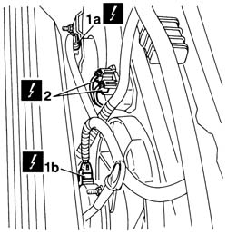
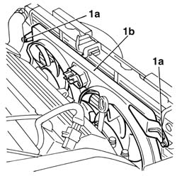
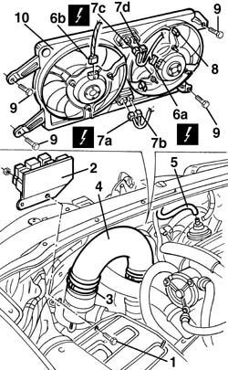
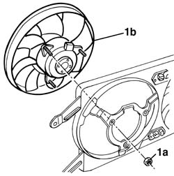
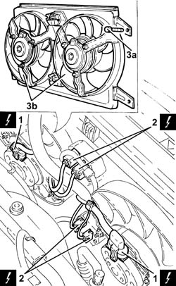
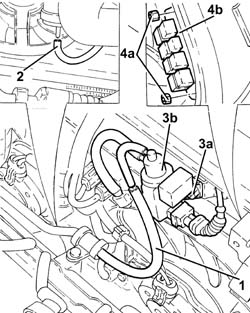
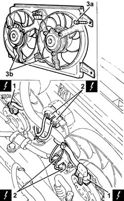

1088E11 fans with single engine duct - r+r
- Path
- Procedures > 10 ENGINE > 1088 ENGINE COOLING > 1088E coolant temperature control devices > 1088E11 fans with single engine duct - r+r
- Kind
- repair procedure (removal / refitting; the operation number is the code)
- Applies to
- engines: 2.5 V6, 3.2 V6, 1.9 JTD 8v , 1.9 JTD 16v, 2.4 JTD 10v, 2.4 JTD 20v; all production periods
- Interactive page
- https://sloeber94.github.io/elrnDB-a156/en/#/3237636
Applies to: engines: 2.5 V6, 3.2 V6; all production periods
 Removing
Removing
 Refitting
RefittingDisconnect the battery negative (-) terminal.
 | Name | Connector |
|---|---|---|
- | Battery |
4450B12 front or rear wheels (two) - r+r
7055B42 Additional FRONT WHEEL ARCH (one), left or right - R.R.
7055A41 RIGHT FRONT GRILLE - R.R.
7055A43 central front grille - r r
7025A34 bonnet lid lock (one) - r+r or repair
5540B16 FRONT LIGHT CLUSTER with direction indicator (one), left or right - R.R.
- 7090G06 HEADLAMP HOUSING CONNECTING CROSSMEMBER - Replace.
1. Disconnect the electrical connections (1a) and (1b) from the electric fans.
| Name | Connector |
|---|---|---|
1a | Engine fan motor - 2 |
| Name | Connector |
|---|---|---|
1b | Engine fan motor - 1 |
2. Disconnect the electrical connections from the upper engine cooling fan resistor.
| Name | Connector |
|---|---|---|
2 | Engine fan adjustment resistor - 2 |
Disconnect the electrical connections from the lower engine cooling fan resistor.
| Name | Connector |
|---|---|---|
- | Engine fan adjustment resistor - 1 |

Applies to: engines: 2.5 V6, 3.2 V6; all production periods
1. Undo the bolts (1a) and remove the fans with the single cooling duct (1b).

Applies to: engines: 2.5 V6, 3.2 V6; all production periods
Refitting
RemovingFit the electric fans with the single cooling duct and fix them using the bolts.
Connect the electrical connections to the engine cooling fan resistances.
Connect the electrical connections to the fans.
- 7090G06 HEADLAMP HOUSING CONNECTING CROSSMEMBER - Replace.
5540B16 FRONT LIGHT CLUSTER with direction indicator (one), left or right - R.R.
7025A34 bonnet lid lock (one) - r+r or repair
7055A43 central front grille - r r
7055A41 RIGHT FRONT GRILLE - R.R.
7055B42 Additional FRONT WHEEL ARCH (one), left or right - R.R.
4450B12 front or rear wheels (two) - r+r
Connect the negative (-) battery terminal.
Applies to: engines: 1.9 JTD 8v , 2.4 JTD 10v; all production periods; only with equipment: Air Conditioner
Removing
Refitting1. Undo the relay mounting bracket bolts.
2. Move the relay mounting bracket.
3. Loosen the bands.
4. Remove the hose from the air filter with the corrugated pipe.
5. Disconnect the pipe.
6. Disconnect the electrical connections from the fans (6a, 6b).
| Name | Connector |
|---|---|---|
6a | Engine fan motor - 1 |
| Name | Connector |
|---|---|---|
6b | Engine fan motor - 2 |
7. Disconnect the electrical connections from the fan resistors (7a, 7b, 7c, 7d).
| Name | Connector |
|---|---|---|
7a | Engine fan adjustment resistor - 1 |
| Name | Connector |
|---|---|---|
7b | Engine fan adjustment resistor - 1 |
| Name | Connector |
|---|---|---|
7c | Engine fan adjustment resistor - 2 |
| Name | Connector |
|---|---|---|
7b | Engine fan adjustment resistor - 2 |
8. Disconnect the wiring from the retaining bands.
9. Undo the bolts fixing the fan unit.
10. Remove the fan unit.

Applies to: engines: 1.9 JTD 8v , 2.4 JTD 10v; all production periods; only with equipment: Air Conditioner
1. If necessary, undo the nuts (1a) and remove the fan (1b).

Applies to: engines: 1.9 JTD 8v , 2.4 JTD 10v; all production periods; only with equipment: Air Conditioner
Refitting
RemovingCheck that the fans are not damaged and, if necessary, test the electrical operation of the motors.
If removed, refit the fan fixing it using the nuts.
Fit the fan unit fixing it with the bolts.
Secure the wiring to the retaining bands.
Connect the electrical connections.
Connect the pipe.
Refit the hose from the air filter to the corrugated pipe.
Tighten the bands.
Fit relay support fixing it using the bolts.
Check the operation of the fans.
Applies to: engines: 1.9 JTD 16v; all production periods
Removing
RefittingPosition the vehicle on the ramp.
Proceed with removal 1016A10 sound-proofing cover - r + r .
Proceed with removal 7055B54 under-engine guard - r r .
Proceed with removal 5530B10 battery - r+r .
Proceed with removal 5530B52 Battery DRIP TRAY/SUPPORT - R.R. .
Proceed with removal 1048A10 air cleaner filtering element - replace .
Proceed with removal - 1064A28 SOLENOID VALVE FOR TURBOCHARGER VANE ACTUATOR - R.R. .
1. Disconnect the electrical connections from the engine fan motors.
| Name | Connector |
|---|---|---|
1 | Engine fan motor - 1 |
| Name | Connector |
|---|---|---|
1 | Engine fan motor - 2 |
2. Disconnect the electrical connections from the resistors for the engine cooling fans and move the electrical wiring aside.
| Name | Connector |
|---|---|---|
2 | Engine fan adjustment resistor - 1 |
| Name | Connector |
|---|---|---|
2 | Engine fan adjustment resistor - 2 |
Disconnect the control pipe from turbocharger vane position actuator.
3. Undo the bolts (3a) and remove the fans with the single cooling duct (3b).

Applies to: engines: 1.9 JTD 16v; all production periods
Refitting
RemovingPlace the fans with the single engine cooling duct back in their housings and secure them using the bolts.
Connect the control pipe on the turbocharger vane position actuator.
Connect the electrical connections to the engine cooling fan resistors.
Connect the electrical connections to the engine fan motors.
Proceed with refitting - 1064A28 SOLENOID VALVE FOR TURBOCHARGER VANE ACTUATOR - R.R. .
Proceed with refitting 1048A10 air cleaner filtering element - replace .
Proceed with refitting 5530B52 Battery DRIP TRAY/SUPPORT - R.R. .
Proceed with refitting 5530B10 battery - r+r .
Proceed with refitting 7055B54 under-engine guard - r r .
Proceed with refitting 1016A10 sound-proofing cover - r + r .
Remove the car from the ramps.
Applies to: engines: 2.4 JTD 20v; all production periods
Removing
RefittingProceed with removal 1016A10 sound-proofing cover - r + r .
Proceed with removal 1048A50 air inlet pipe to turbo charger - r + r .
Proceed with removal 5530B10 battery - r+r .
Proceed with removal 5530B52 Battery DRIP TRAY/SUPPORT - R.R. .
Proceed with removal 1048A10 air cleaner filtering element - replace .
1. Disconnect vacuum pipe from the solenoid valve for the turbocharger vanes actuator.
2. Disconnect the vacuum pipe from the turbocharger variable geometry control actuator.
3. Undo the nuts (3a) and move aside the turbocharger vane position actuator solenoid valve (3b).
4. Undo the nuts (4a) and move aside the relay holder bracket (4b).

Applies to: engines: 2.4 JTD 20v; all production periods
1. Disconnect the electrical connections from the engine fan motors.
| Name | Connector |
|---|---|---|
1 | Engine fan motor - 1 |
| Name | Connector |
|---|---|---|
1 | Engine fan motor - 2 |
2. Disconnect the electrical connections from the resistors for the engine cooling fans and move the electrical wiring aside.
| Name | Connector |
|---|---|---|
2 | Engine fan adjustment resistor - 1 |
| Name | Connector |
|---|---|---|
2 | Engine fan adjustment resistor - 2 |
3. Undo the bolts (3a) and remove the fans with the single cooling duct (3b).

Applies to: engines: 2.4 JTD 20v; all production periods
Refitting
RemovingPlace the fans with the single engine cooling duct back in their housings and secure them using the bolts.
Connect the electrical connections to the engine cooling fan resistors.
Connect the electrical connections to the engine fan motors.
Place the relay holder bracket back in its housing and fix it using the bolts.
Fit the turbocharger vane actuator solenoid back in its housing and fix it using the nuts.
Connect the vacuum pipe from the turbocharger variable geometry control actuator.
Connect the vacuum pipe to the solenoid valve for the turbocharger vanes actuator.
Proceed with refitting 1048A10 air cleaner filtering element - replace .
Proceed with refitting 5530B52 Battery DRIP TRAY/SUPPORT - R.R. .
Proceed with refitting 5530B10 battery - r+r .
Proceed with refitting 1048A50 air inlet pipe to turbo charger - r + r .
Proceed with refitting 1016A10 sound-proofing cover - r + r .
Topics linked from this page (22)
- 1016A10 sound-proofing cover - r + r
- 1048A10 air cleaner filtering element - replace
- 1048A50 air inlet pipe to turbo charger - r + r
- 4450B12 front or rear wheels (two) - r+r
- 5530B10 battery - r+r
- 5530B52 Battery DRIP TRAY/SUPPORT - R.R.
- 5540B16 FRONT LIGHT CLUSTER with direction indicator (one), left or right - R.R.
- 7025A34 bonnet lid lock (one) - r+r or repair
- 7055A41 RIGHT FRONT GRILLE - R.R.
- 7055A43 central front grille - r r
- 7055B10 Front BUMPER - R.R.
- 7055B42 Additional FRONT WHEEL ARCH (one), left or right - R.R.
- 7055B54 under-engine guard - r r
- A1 Battery
- N11 Engine fan motor - 1
- N12 Engine fan motor - 2
- O10 Engine fan adjustment resistor - 1
- O10A Engine fan adjustment resistor - 1 ( CROSSMEMBER )
- O10B Engine fan adjustment resistor - 1 ( CROSSMEMBER )
- O12 Engine fan adjustment resistor - 2
- O12A Engine fan adjustment resistor - 2 ( CROSSMEMBER )
- O12B Engine fan adjustment resistor - 2 ( CROSSMEMBER )
Topics that link to this page (10)
- D31 ENGINE OVERHEATING / WITH FAN NOT WORKING
- 1020D36 flywheel end oil seal - replace for manual gearbox with hydraulic selection versions
- 1020D38 flywheel side oil seal - replace
- 1024B10 engine flywheel - r + r for versions with manual gearbox
- 1024B11 engine flywheel - r r for manual gearbox with hydraulic selection versions
- 1088B20 engine cooling radiator - r + r
- 1088B24 engine cooling radiator - r r for air conditioned versions
- 1810A28 clutch - r r for manual gearbox with hydraulic selection versions
- 2110A10 manual gearbox and differential - r + r
- 2110A11 manual gearbox with differential - r r for versions with hydraulic selection